用Heroku部署Tomcat網站
將JavaWeb專案部署Heroku的踩坑紀錄
Heroku部署JavaWeb項目
-
我自己的JavaWeb是運行在Tomcat的，所以要用heroku提供的Tomcat，叫做webapp-runner
-
用法也很簡單，本地maven引用webapp-runner，打包成war，push到heroku倉庫，自動就能運行起來了
-
首先在專案根目錄新增
Procfile，沒有副檔名
web: java $JAVA_OPTS -jar target/dependency/webapp-runner.jar --port $PORT target/*.war
- 加入
webapp-runner依賴，注意它版本是跟Tomcat的，我用8版Tomcat所以選8.5.68
<build>
<plugins>
<plugin>
<groupId>org.apache.maven.plugins</groupId>
<artifactId>maven-dependency-plugin</artifactId>
<executions>
<execution>
<phase>package</phase>
<goals>
<goal>copy</goal>
</goals>
<configuration>
<artifactItems>
<artifactItem>
<groupId>com.heroku</groupId>
<artifactId>webapp-runner</artifactId>
<version>8.5.68.1</version>
<destFileName>webapp-runner.jar</destFileName>
</artifactItem>
</artifactItems>
</configuration>
</execution>
</executions>
</plugin>
</plugins>
</build>
- 打包完成專案長這樣
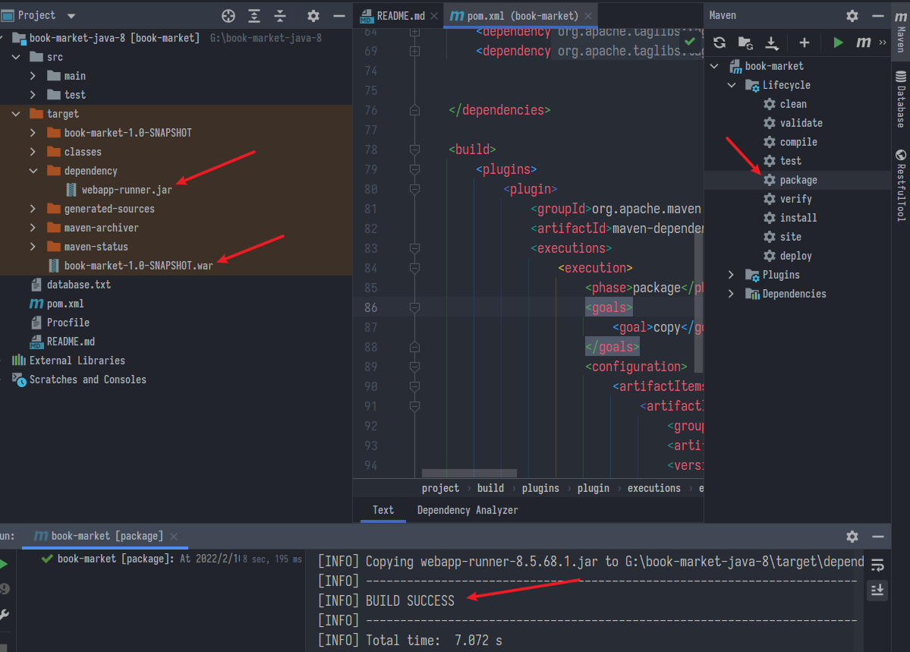
-
我是有安裝heroku cli，比較方便一點，可以直接在本地用heroku指令，也可以在網頁版上面做到一樣的步驟
-
建立heroku倉庫，可以自己取名，但不能跟別人重複(因為到時候網址就是heroku倉庫，它叫app的名稱)，不自訂就讓系統生成，反正之後都可以改
heroku create
- 初始化、推送
git init
git add .
git commit -m "Ready to deploy"
git push heroku master
-
分支master或main都能自動找到
-
部署成功，使用指令
heroku open，或是在網頁點Open app就能打開專案的index
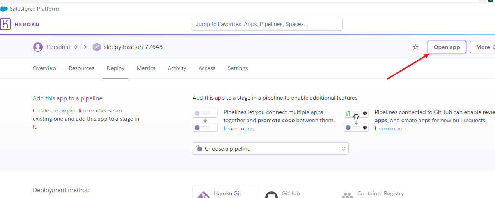
- 成功看到網頁，DB也有連上，但是css跑掉了，排查原因是CORS跨域問題

- 因為我在本地開發都是用http，但部屬到heroku後預設是https，這樣也算跨域，可以看到一些靜態資源是OK的，但JS或ajax請求就全被擋
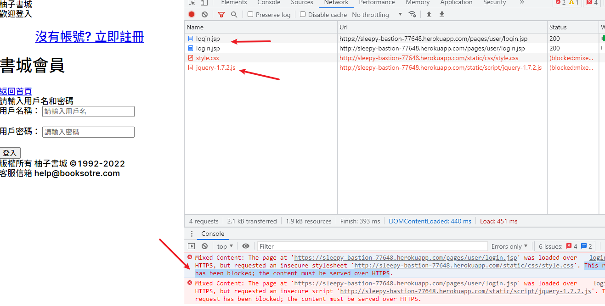
在heroku使用mySQL
-
它的插件叫cleardb，免費，heroku有很多插件，自己去官網查，安裝也都很簡單就不多提
-
安裝成功後輸入
heroku addons查看插件
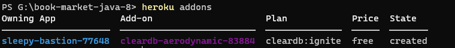
- 輸入
heroku config查看設定訊息，它會顯示所有變數，可以取得完整的DB存取資料- 如果顯示太多遠端，需要手動指定
- 或是用
git remote -v查看列表，用git remote rm 遠端名刪除多餘的
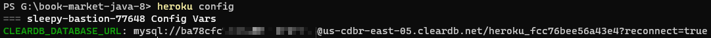
- 嘗試連線，資料庫名稱
heroku_fcc76bee56a43e4顯然不是我這種免費仔能控制的，只好修改自己專案的連線地址
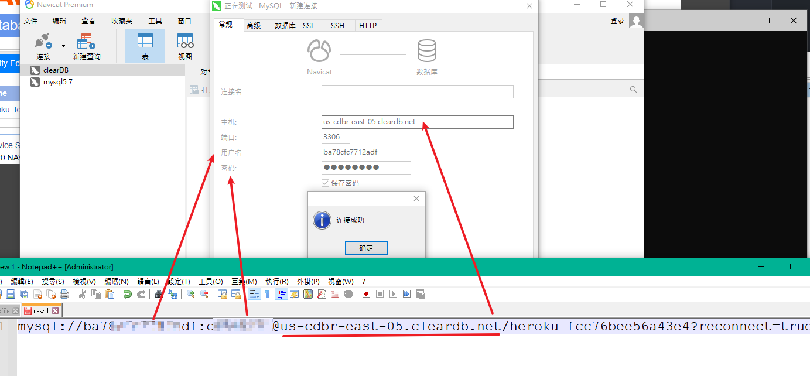
- 導入SQL資料，修改一下資料庫名稱，順利上傳

- 修改一下專案中的網址，測試一下是否能成功連上
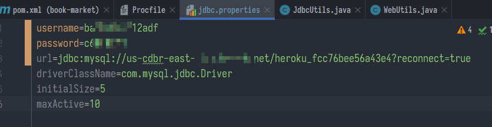
JavaWeb改用Https
Tomcat部分
- 首先要有證書(證明你是可信的，通常需要跟大機構買憑證，也有一些免費的)
- 我自用測試所以直接在本地先生成一個，用jdk自帶的keytool生成keystone
keytool -genkey -alias tomcat -keyalg RSA
- 過程需要輸入密碼，其他隨便enter就好

- 生出來預設是在
我的文件之下，可以把它搬到順眼的位置 - 接著修改tomcat設定，打開
\apache-tomcat-8.5.75\conf\server.xml - 需要指定
keystoreFile跟keystorePass，其餘不用變- 注意空格或換行的問題，參數前後連在一起會報錯
<Connector port="8443" protocol="HTTP/1.1" SSLEnabled="true"
maxThreads="150" scheme="https" secure="true" clientAuth="false"
keystoreFile="G:/Java/apache-tomcat-8.5.75/.keystore"
keystorePass="123456" sslProtocol="TLS" />
Java部分
- 回到
web.xml，啟用加密連線，可以自訂規則<url-pattern>/*就是全部都用加密- 我本來挺蠢的，還用了一個filter在那邊攔截請求修改頭部訊息
<!--改用https-->
<security-constraint>
<web-resource-collection>
<web-resource-name>SSL</web-resource-name>
<url-pattern>/*</url-pattern>
</web-resource-collection>
<user-data-constraint>
<transport-guarantee>CONFIDENTIAL</transport-guarantee>
</user-data-constraint>
</security-constraint>
- 修改部署設定，由於是自製的證書，打開瀏覽器會跳一個警告

- 成功

解決CROS與307問題
- 然而這樣本地成功了，部署上雲端卻會顯示代碼307無限卡死
- 嘗試用最老派的filter方法，還是不行
public class CorsFilter implements Filter {
@Override
public void doFilter(ServletRequest servletRequest, ServletResponse servletResponse, FilterChain filterChain) throws IOException, ServletException {
HttpServletResponse response = (HttpServletResponse) servletResponse;
response.setHeader("Access-Control-Allow-Origin", "*");
response.setHeader("Access-Control-Allow-Methods", "POST, GET, OPTIONS, DELETE");
response.setHeader("Access-Control-Max-Age", "3600");
response.setHeader("Access-Control-Allow-Headers", "content-type,Authorization");
// response.setHeader("Access-Control-Allow-Credentials", "true");
filterChain.doFilter(servletRequest, servletResponse);
}
- 一樣會報錯Mixed Content
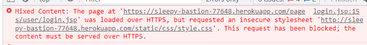
- 最後找到解法是在每個JSP都加上一行
<meta http-equiv="Content-Security-Policy" content="upgrade-insecure-requests">

- xml裡面的https設定就不要了
- 後來發現但凡涉及轉址，部署到雲端後的行為都可能有坑要注意，例如這個:
// 轉址回原先頁
response.sendRedirect(request.getHeader("Referer"));
- 本來是返回上一個請求，結果大概因為http-https會自動跳轉，這樣寫就變成無限跳轉又307了
- 說實在還是沒弄得太懂部署https到底要怎做，但正常來說一般項目都是前後分離，且內部有網關或nginx做反向代理，外部靜態資源的請求在nginx就能直接打回去了，應該反而不會搞得這麼麻煩
heroku連結github
- 發現有更簡單的方法，直接連到指定github的倉庫
- 往下拉能設定自動部署，也可以手動
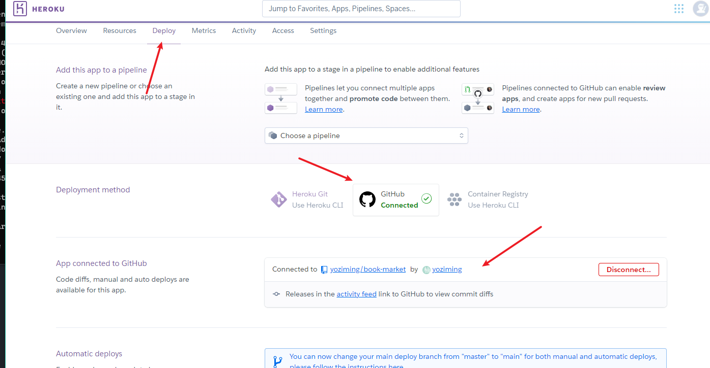
- 好處是要上傳的檔案會小很多(直接傳到heroku是含輸出打包後的那整坨)
- 從github過去就省掉這一步，打包輸出交給heroku去幹，但是可能它包的會有些微差異(有些變成亂碼之類)，需要自己在確認一遍
Java 8與11的專案結構差異
- Java8的預設結構是這樣，東西都是放在\src\main
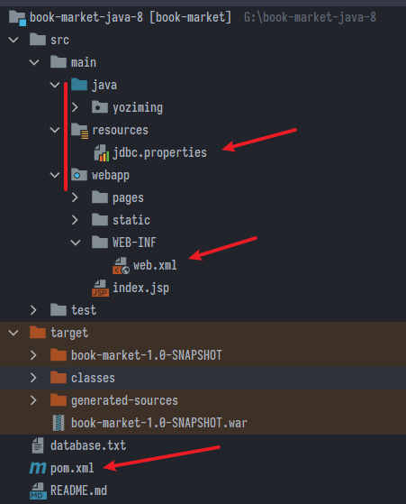
-
java 11 預設結構卻是這樣
-
要注意.properties與web資源的位置不同
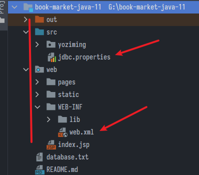
解決Maven詭異報錯
- 排錯半天明明沒問題卻報錯，很有可能是Cache問題，選這邊清空重開即可

git指令
- 本地連到遠端倉庫
- 給遠端倉庫取別名叫做
origin，因為如果是載下來的倉庫預設就叫origin
- 給遠端倉庫取別名叫做
git remote add origin https://倉庫網址.git
- 將檔案加入暫存
git add .
- 註記
git commit -m "本次上傳的註解"
- 把叫origin的推上它的遠端master分支上
- 以前主分支預設叫
master，後來說有歧視所以預設改叫main -u設定 upstream ，在 Git 裡面每一個分支可以設定一個「上游」- 如果不用
-u就要輸入完整的遠端節點名稱
- 以前主分支預設叫
git push -u origin master
上次修改於 2022-02-11